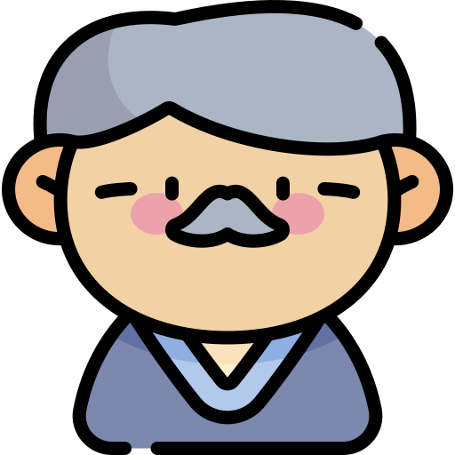
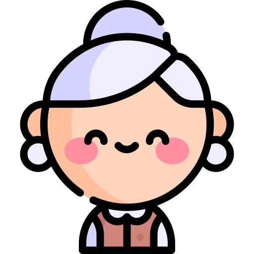
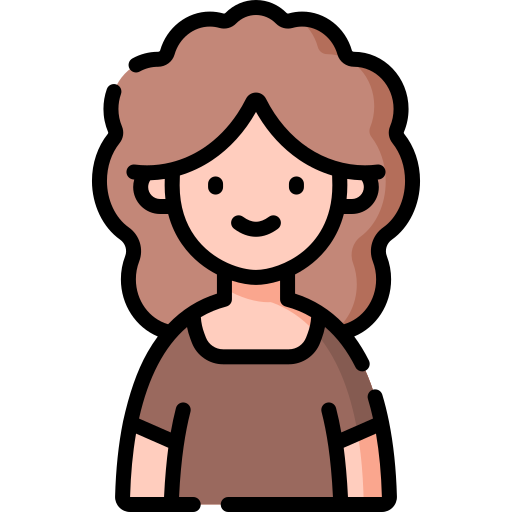
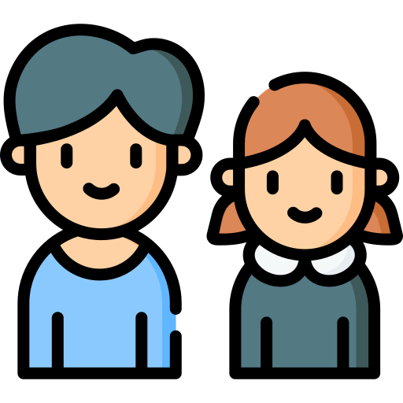
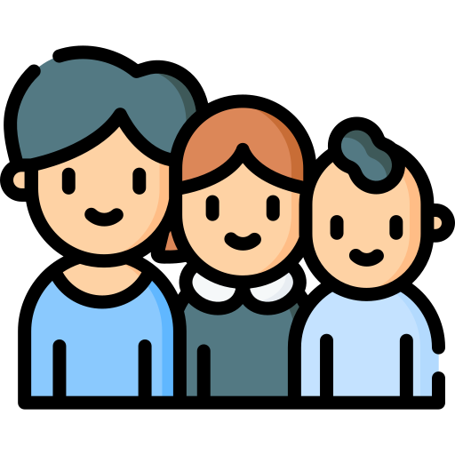

awilu - abuelo
awkish - viejo, anciano
awila - abuela
chakwaśh - vieja, anciana
mama - mamá / mamacha - mamita
walmi - esposa-
tayta - papá / taytacha - papito
wayapa - esposo, varon hombre adulto -
wawi - hijo(a) de la mujer / esposa (la esposa tiene wawi)
wamla (walmi) wawi - hija de la esposa
walaśh wawi - hijo de la esposa -
chuli - hijo (a) del varón / esposo (el varón tiene chuli)
wamla (walmi) chuli - hija de varon
walaśh chuli - hijo de varón -
pani - hermana del varón (cuñada)
-

ñaña - hermana de la mujer (cuñada)
-

tuli - hermano de la mujer (cuñado)
-
wawki - hermano del varón (entre varones)

willka - nieto(a)
walmi willka - nieta
walaśh willka - nieto-
wamla - señorita
-
walaśh - joven varón
-
wamla akapakuna - niñas
walaśh akapakuna - niños
chullaśha - viudo, viuda
nuna - gente
ñuñu pawaq - último hijo o hija